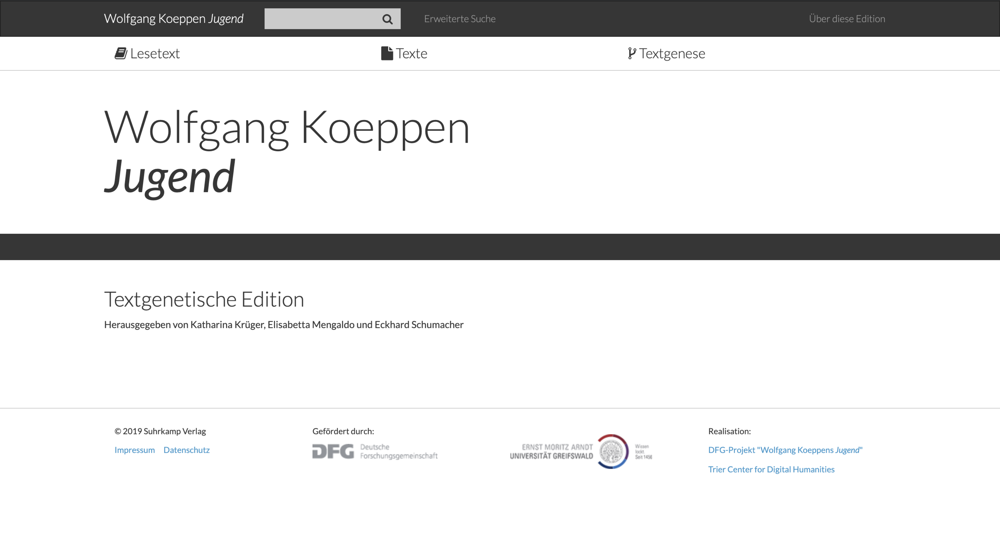
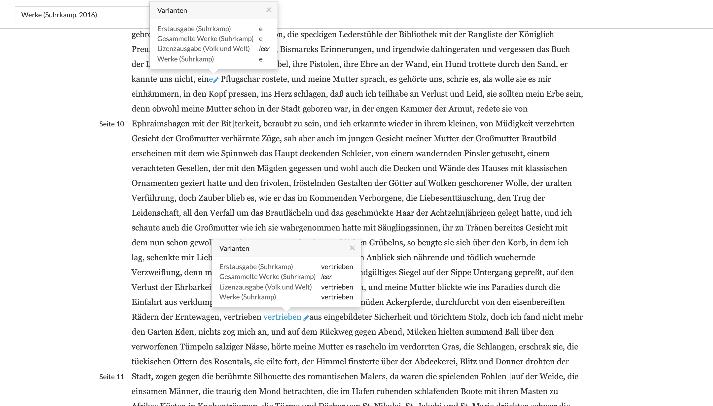
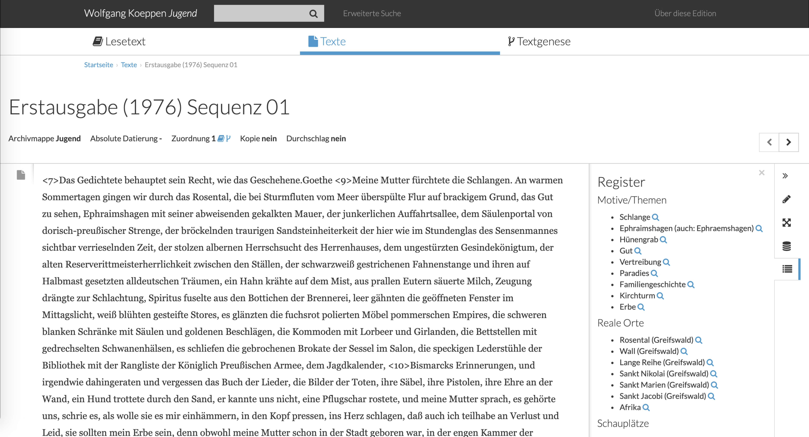
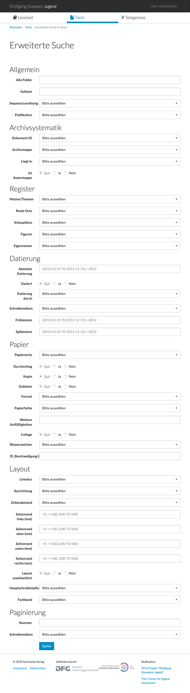
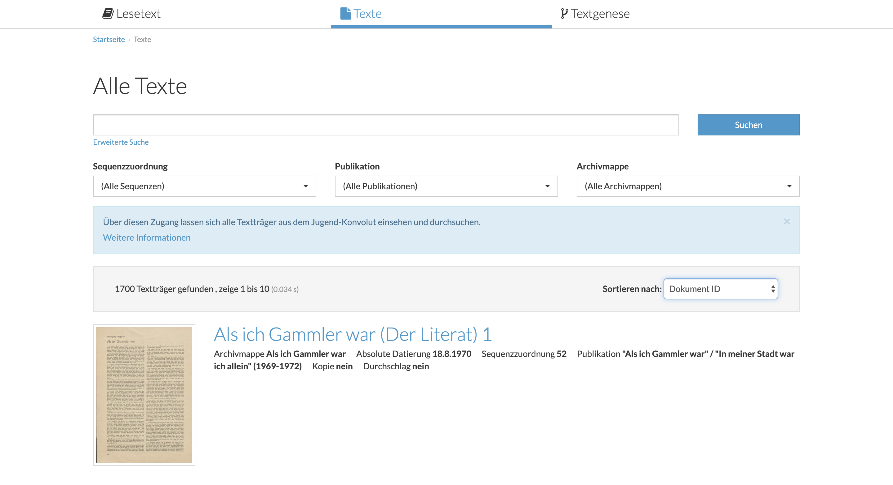
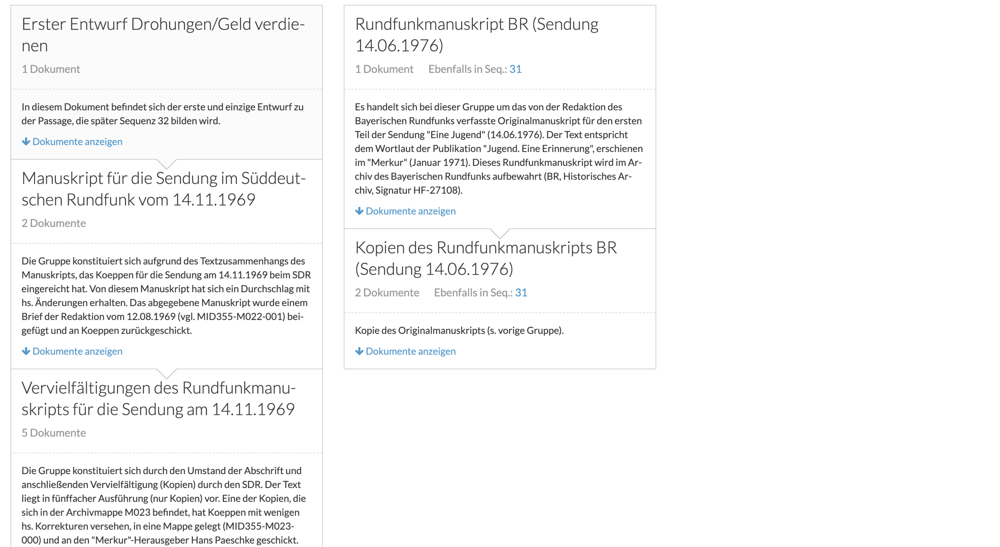

Wolfgang Koeppen Jugend – Rezension der textgenetischen Edition
Table of Contents
Abstract
The Jugend Edition is a critical edition of Wolfgang Koeppen’s Jugend, which was published in 1976. It took more than fifteen years for Koeppen to write Jugend. The edition offers the opportunity to dive into the work of Wolfgang Koeppen and to follow him along during his writing process. After his death, all of the material related to Jugend was digitized and is presented as a complex dossier génétique. This review provides an overview of the presented documents, as well as the main features and appearance of the edition, with a special emphasis on its presentation of genetic relationships.
Einleitung
Wolfgang Koeppens Prosatext Jugend erschien 1976 als Band 500 der Suhrkamp-Bibliothek und als erste Buchveröffentlichung nach seinem Wechsel zu jenem Verlag Anfang der 1960er Jahre.1 Statt eines lang erwarteten und vielfach angekündigten großen Romans erschien mit Jugend ein dichter und sperrig anmutender Text, ganz ohne eine explizite Zuordnung zu einer bestimmten Gattung, der von der Kritik jedoch begeistert aufgenommen wurde.2 Mit einem Umfang von nur 140 Seiten lässt sich mit gutem Recht von einem äußerst schmalen Band sprechen. Es verwundert daher kaum, dass Koeppen selbst sein Werk in einem Brief an seinen langjährigen Förderer Marcel Reich-Ranicki im Vorfeld der eigentlichen Veröffentlichung und kurz vor Fertigstellung als „Fragmentband“ bezeichnete.3 Dennoch steht dieser Einordnung des eigenen Werks auf der anderen Seite ein umfassendes Konvolut an ‚Entwurfsseiten‘ gegenüber.4
So finden sich alleine im Wolfgang-Koeppen-Archiv (WKA) an der Universität Greifswald mehr als 1.500 Typoskript-Seiten, die vorbereitende Skizzen, Vorstufen oder auch andere literarische Entwürfe und Überlegungen beinhalten und deren Anordnung wohl nicht auf Koeppen selbst, sondern auf den ersten Nachlassverwalter nach Koeppens Tod 1996, zurückgeht. Im Rahmen der textgenetischen Edition liegt diese Materialvielfalt nun erstmals ediert vor und wird so der Öffentlichkeit zugänglich gemacht.
Überblick über das Vorhaben
ie textgenetische Edition verfolgt das Ziel, den Schaffensprozess Koeppens zu entschlüsseln, zu präsentieren und Nutzer*innen einen multiperspektivischen Zugang zum Werk anzubieten. Dabei wird auf komplexe, synoptisch schichtende Apparate, wie sie zumeist in ähnlichen Editionen im Print üblich sind, verzichtet. Stattdessen wird versucht, die Ergebnisse der genetischen Untersuchung mithilfe interaktiver Visualisierungen und einer Vielzahl von Verlinkungen zu präsentieren. Obwohl es in der Edition und den begleitenden Aufsätzen der Herausgeber*innen (s.u.) nicht explizit erwähnt wird, ist in der Gesamtanlage der Edition dennoch eine methodische Nähe zur französischen critique génétique zu erkennen; so geht es im Kern auch hier darum, den Blick auf den veröffentlichten Text durch den avante-texte (die Vorarbeiten) zu ergänzen.5 Im Grundsatz verfügt die Edition sowohl über eine online zugängliche wie auch über eine gedruckte Komponente (Hybridedition).
Die Erschließung, Untersuchung und Erarbeitung der Edition wurde durch die Deutsche Forschungsgemeinschaft von 2011 bis 2015 sowie durch Mittel der Philosophischen Fakultät der Universität Greifswald ermöglicht. Als Herausgeber*innen der Edition zeichnen Katharina Krüger, Elisabetta Mengaldo und Eckhard Schumacher verantwortlich. Die technische Realisation wurde zudem durch das Trier Center for Digital Humanities unterstützt.6
Zum gedruckten Teil der Edition
Der gedruckte Teil der Edition ist zugleich der 2016 veröffentlichte siebte Band der von Hans-Ulrich Treichel verantworteten Werkausgabe Wolfgang Koeppens. Der Band enthält einerseits den Lesetext, der sich an der Veröffentlichung von 1976 orientiert, sowie einen umfassenden, von Eckhard Schumacher verfassten Kommentar.7 Dieser beschreibt detailliert die Entstehungsgeschichte anhand ausgewählter Textbeispiele und ergänzt so den digitalen Teil der Edition. Vervollständigt wird die Hybridedition durch die Widmung eines ganzen Bandes in den Beiheften zu editio. Band 40 der Reihe befasst sich unter dem Titel Textgenese und digitales Edieren umfangreich mit der Darstellung textgenetischer Prozesse (im digitalen Medium) und stellt die Ergebnisse der Tagung Verzettelt, verschoben, verworfen zusammen, in deren Rahmen die textgenetische Edition erstmals öffentlich präsentiert wurde.8 Hierzu zählen auch Aufsätze der Editionsherausgeber*innen, die einzelne textgenetische Phänomene erläutern und auf Probleme bei der Erschließung, Ordnung sowie der letztendlichen Erarbeitung der Edition eingehen.
Der in der Druckausgabe präsentierte Lesetext entspricht dem Text, der in der digitalen Edition unter dem Zugang Lesetext (Auswahl: Werke, Suhrkamp 2016) präsentiert wird. Wobei in der digitalen Edition der Zeilenfall der Druckausgabe nicht übernommen wird – Seitenumbrüche hingegen werden durch senkrechte Trennstriche angezeigt und der Wechsel zwischen einzelnen Sequenzen (Kapiteln) wird ebenfalls durch entsprechenden Weißraum präsentiert. Im Gegensatz zur digitalen Komponente der Edition verzichtet die Druckausgabe jedoch explizit auf den Einbezug textgenetischer Materialien sowie auf jegliche Auflistung von Varianten zwischen den verschiedenen Ausgaben von Jugend (siehe unten). Analoge und digitale Komponente bilden gemeinsam die Edition und ergänzen sich dabei gegenseitig.
Inhalt und Ziel der digitalen Edition
Komplementär zur Druckausgabe enthält der digitale Teil der Edition neben dem Lesetext zudem auch die Vielzahl der Textträger des Jugend-Konvoluts. Dieses umfasst zusätzlich zu den zuvor bereits erwähnten rund 1.500 Seiten aus dem WKA auch die Satzvorlage aus dem im Deutschen Literaturarchiv befindlichem Siegfried Unseld Archiv sowie ein Manuskript aus dem Archiv des Bayerischen Rundfunks. Jene Dokumente werden im Zuge der editorischen Arbeit erstmals der Öffentlichkeit zugänglich gemacht.9 Vor dem Hintergrund einer so umfangreichen Arbeit stellt sich berechtigterweise die Frage nach dem Ziel der editorischen Aufarbeitung. Festzuhalten ist, dass die Edition weit mehr als eine reine Präsentation der archivalischen Dokumente bietet. Vielmehr ist es das Ziel der Herausgeber*innen, die komplexe Entstehungsgeschichte von Jugend und die Textgenese direkt am Material auf Grundlage des Nachlasses nachvollziehbar zu machen.10
Der Kommentar im gedruckten Teil der Edition verrät mehr über grundlegende Annahmen, die für die genetische Untersuchung des Materials und spätere Präsentation erkenntnisleitend waren. So sei davon auszugehen, dass Wolfgang Koeppen nicht nur zu einem bestimmten Zeitpunkt an Jugend arbeitete, sondern fortwährend über einen Zeitraum von mindestens fünfzehn Jahren. Dies führt wiederum zur Annahme, dass Jugend nie als ein zusammenhängender Text entstanden ist, sondern als eine Kompilation einzelner Bestandteile.11 Die textgenetische Edition erhebt das Fragmentarische folgerichtig zu ihrem Leitgedanken. Als ordnende Einheit zur Entschlüsselung der Genese wird der gesamte Text in sog. ‚Sequenzen‘ unterteilt. Diese sind zwar im Drucktext per se nicht vorhanden, entsprechen jedoch den durch Leerzeilen getrennten Abschnitten.12
Nicht unerwähnt bleiben soll auch die technische Basis der textgenetischen Edition. Diese bildet notwendigerweise den Rahmen für die Möglichkeiten der Darstellung einer digitalen Edition und ist daher ein wichtiges Kriterium, um diese beurteilen zu können. Zu den Details des technischen Hintergrunds macht die Edition jedoch leider nur einige wenige Angaben, die sich, wie folgt, umreißen lassen: Als Basis für die Transkription der einzelnen Textträger diente das an der Universität Trier entwickelte Werkzeug Transcribo in Kombination mit FuD (Forschungsnetzwerk und Datenbanksystem).13 Die gewonnenen Daten wurden anschließend in einer MySQL-Datenbank gespeichert, welche wiederum mit einer NoSQL-Datenbank synchronisiert wird, die letztlich die Grundlage für die auf Cake-PHP basierende Webausgabe bildet, für deren Umsetzung der Projektmitarbeiter Patrick Heck verantwortlich zeichnet.14 Die Rohdaten liegen in einem XML-Format vor15, zum genauen Datenmodell macht die Edition jedoch keine weiteren Angaben. Ein Abruf der Daten über eine entsprechende Schnittstelle sowie deren Nachnutzung ist nicht möglich. Auf Anfrage konnten die Daten jedoch für den Zweck dieser Rezension eingesehen werden.
Bei den zur Verfügung gestellten Datensätzen handelt es sich um
Rohdaten, die direkt aus den verwendeten Tools Transcribo und FuD exportiert
wurden. Das hier verwendete Datenmodell orientiert sich an den Empfehlungen
der Text Encoding Initiative und ergänzt dieses durch
benutzerdefinierte Elemente. Die Transkription erfolgte offenbar streng am
Dokument orientiert und gibt daher dem Element <surface>
dem Vorzug gegenüber dem sonst häufig verwendeten Element
<text> und erfasst strukturelle Einheiten wie Zeilen
oder auch Absätze nicht inline, sondern als Stand off-Annotation. Weitere
Rückschlüsse über das konzeptuelle wie auch logische Modelle der
Transkription lassen die Rohdaten jedoch nur bedingt zu – so handelt es sich
doch hier vielmehr um eine Art Zwischenformat zum Austausch zwischen den
verschiedenen Komponenten der Edition (FuD und Transcribo sowie der
Webausgabe).
Präsentation und Aufbau
Gestaltung und Zugänge


 

Textgenese als visueller Pfad
Um den Nutzer*innen der Edition die Ergebnisse möglichst eingängig zu präsentieren, wurden von den Editor*innen je Sequenz sog. genetische Pfade rekonstruiert, die wiederum aus verschiedenen Gruppen bestehen. Zu einer solchen Gruppe gehören beliebig viele Dokumente,
die aufgrund ausgewiesener textueller und/oder metatextueller Eigenschaften als zusammengehörig betrachtet werden können, da sie vermutlich im selben Zeitraum bzw. in derselben Arbeitsphase entstanden sind.18
Die präsentierte Ordnung ist jedoch weniger als eine definitive Chronologie zu verstehen, sondern eher als ein Vorschlag zur Rekonstruktion der genetischen Verhältnisse.19 Vielmehr bildet der einzelne Pfad eine mögliche relative Chronologie ab und versucht so die zeitlichen Abhängigkeitsverhältnisse verschiedener Textträger zu deuten.20 Wie Abbildung 4 eines beispielhaften Pfades einer Sequenz zeigt, ist es möglich, dass zu einer Sequenz mehrere Pfade rekonstruiert wurden. Die Pfade sind untereinander jedoch nicht chronologisch angeordnet. Der jeweils längste rekonstruierte Pfad befindet sich in der Darstellung links und endet in der entsprechenden Sequenz des Lesetextes bzw. der zugehörigen Stelle der Erstveröffentlichung. Die Pfadansicht erlaubt also nur in der Vertikalen und nicht in der Horizontalen einen Rückschluss über das textgenetische Verhältnis der Gruppen zueinander.

Ansicht einzelner Textträger
Eine grundsätzliche Herausforderung, die sich jede digitale Edition stellen muss, ist die Frage nach der dauerhaften und möglichst exakten Referenzierbarkeit ihrer Inhalte. Letztlich also der Frage danach, wie zitierfähig eine Edition ist.21 Die textgenetische Edition macht hierzu nur einige wenige Angaben. Auf den Einsatz von Diensten wie URN oder DOI wird jedoch, wie es scheint, verzichtet. Statt eines mittlerweile in anderen digitalen Editionen häufig vorgefundenen Zitiervorschlags auf Seitenebene, findet sich im Bereich Über die Edition lediglich ein allgemeiner Hinweis zur Zitation der Edition.22

- Bezeichnung der Archivmappe
- Angaben zur Datierung der Einzelseite
- Zuordnung zur Genese einer Sequenz
- Angaben, ob der Textträger eine Kopie oder Durchschlag einer anderen Seite ist
Hierauf folgt der Hauptbereich der Einzelseitenansicht. In drei Spalten wird dem Nutzer eine synoptische Ansicht aus Digitalisat und einem zeilengetreu wiedergegebenen transkribierten Text präsentiert (Spalte 1 und 2). Die dritte Spalte ermöglicht über verschiedene Reiter die Anpassung der Darstellung des Textes und den Zugriff auf weitere Informationen – folgende Auswahlmöglichkeiten stehen hier zur Verfügung:
- Textzustände
- Modifikationen
- Kontexte
- Metadaten
- Register
So bieten die ersten beiden Reiter die Möglichkeit, die Anzeige des Textes nach verschiedensten Kriterien zu modifizieren. Grundsätzlich kann zwischen einer Ansicht des maschinenschriftlichen Grundzustandes und des Endzustandes, inklusive aller handschriftlichen Korrekturen und Ergänzungen, gewählt werden. Ferner ist es über den Reiter Modifikationen zudem möglich, einzelne Änderungs- bzw. Ergänzungsoperationen Koeppens gezielt nachzuverfolgen. Die Änderungsoperationen Koeppens können im Text durch farbliche Hinterlegung gezielt hervorgehoben werden. Im Falle der betrachteten Beispielseite sind dies neben zunächst einfach zu verstehenden Sofortkorrekturen auch komplexere Ersetzungen sowie eine Vielzahl von Anmerkungen, die Koeppen um den Text herum platziert hat. Eine Option, die das Verständnis der Genese einzelner Manuskripte durchaus erleichtert, jedoch wie Rüdiger Nutt-Kofoth zurecht angemerkt hat „nur einzelstellenbezogene, nicht aber zusammenhängende Änderungen ausweist“.24 Während die Reiter Metadaten und Register Informationen bereithalten, auf die im bisherigen Verlauf der Rezension bereits eingegangen wurde, scheint doch ein genauerer Blick auf den Reiter Kontexte lohnenswert.
Dort bietet die Edition, neben Informationen zu Vorgängern und Nachfolgern, inklusive entsprechender Verlinkungen, in der Archivmappe auch Hinweise zur Textgenese (ebenfalls Vor- und Nachfolger) an. Die Herausgeber*innen der Edition weisen jedoch darauf hin, dass ein Vor- bzw. Nachfolger im textgenetischen Zusammenhang nur dann angegeben ist, wenn eine unmittelbare Vorstufe bzw. folgende Textstufe ermittelt werden konnte.25 Im Falle des Manuskripts MID355-M028-003 wurden keine solchen Vorstufen bzw. folgenden Textstufen identifiziert.
Wie genau die Grenzen einer unmittelbaren Vorstufe bzw. einer folgenden Textstufe definiert sind, ist jedoch nicht weiter erläutert. Festzustellen ist aber, dass sich nur einige wenige Textträger finden, bei denen ein unmittelbarer Vorgänger bzw. Nachfolger im rekonstruierten textgenetischen Zusammenhang angegeben ist. Hier scheint sich zumindest in Teilen ein Widerspruch in der Methodik der textgenetischen Edition zu offenbaren. So wird auf der Makroebene bzw. Mesoebene zwar ein chronologischer Pfad der Genese hergestellt und visualisiert, der einen starken Zusammenhang zwischen den Gruppen und den darin enthaltenen Dokumenten impliziert, auf Ebene der einzelnen Dokumente werden diese Bezüge jedoch nicht bzw. nur selten hergestellt. Dies verdeutlichen besonders auch die letzten beiden Gruppen Vorbereitung Satzvorlage und Satzvorlage der letzten Sequenz. Während diese beiden im textgenetischen Pfad direkt hintereinander folgen und auch von der gewählten Bezeichnung der Editor*innen in enger Verwandtschaft zu stehen scheinen, fehlt eine Zuordnung im Bereich der Textgenese bei Ansicht einzelner Texte. In der Beschreibung der Gruppe Vorbereitung Satzvorlage vermerken die EditorInnen dazu das Folgende: „Es bestehen damit große Analogien zur Satzvorlage. Die Änderungen finden sich jedoch nicht in der Satzvorlage wieder.“26 Aufgrund der fehlenden Zuordnung als unmittelbarer Vorgänger/Nachfolger stellt sich die Frage, welche Änderungen Koeppen hier zunächst erdacht hatte, die zu so starken Unterschieden zwischen den einzelnen Texten der Gruppen führten. Hierauf bietet die textgenetische Edition keine Antwort.
Der Vergleich mit anderen Textträgern des Nachlasses oder auch den jeweiligen Teilen der veröffentlichten Fassung bleibt den Nutzer*innen der digitalen Edition überlassen. Andere digitale Editionen bieten hier häufig deutlich mehr Optionen, wie bspw. synoptische Ansichten (Parzival-Edition), Einblendapparate mit verlinkten Varianten (Faust-Edition) oder tabellenartige Präsentationen computergestützter Kollationierung (Beckett-Archive). Eine Funktionalität die nicht nur die Benutzung erleichtern, sondern zugleich auch Befund und Deutung der Herausgeber*innen Nachdruck verleihen würde.
Fazit
Die Edition nimmt sich erstmals der Aufgabe an, das Nachlasskonvolut Wolfgang Koeppens zu seinem Roman Jugend zu ergründen und der Öffentlichkeit in Form einer digitalen textgenetischen Edition zu präsentieren. Ein Vorhaben für welches es nur einige wenige Vorbilder gibt.27 Das rhizomatische Netz des Schreibens Koeppen wird in der Edition selbst als eine Art Netz aufgearbeitet und zugänglich gemacht. Der Edition lässt sich hier ganz ohne Bedenken ein in weiten Teilen erkennbares und die Arbeit bestimmendes digitales Paradigma bescheinigen.
Die Ergebnisse der Betrachtung zeigen zudem, dass die Darstellung der Textgenese dann besonders gut gelingt, wenn diese losgelöst vom eigentlichen Text visualisiert wird. In der textgenetischen Edition ist dies vor allem anhand der rekonstruierten und klar strukturierten genetischen Pfade erkennbar, die jeder Sequenz zugeordnet sind – wenngleich auch hier die Schwächen der Edition zutage treten. So gerät nicht nur die listenförmige Darstellung der textgenetischen Entwicklung auf dieser (Meso-)Ebene an ihre Grenzen. Vielmehr verbleibt auch das textgenetische Modell der Edition als solches im Wagen. Weder der editorische Bericht des digitalen Teils noch des Drucksteil verrät mehr über die genaue Konzeption – zwar offenbart der zuvor zitierte Ausschnitt mehr über die Anlage einzelner Gruppen, unklar ist jedoch wie sich eine solche Gruppe zu üblicherweise angelegten begrifflichen Modellen wie Fassung respektive Textstufe verhält. Wünschenswert wäre es in diesem Zusammenhang auch, mehr über die ‚Dokumentklassen‘ zu erfahren, die sich in der reichhaltigen Nachlassüberlieferung ausmachen lassen.
Ferner ist hier zu fragen, inwiefern dies eine listenförmige Darstellung von Textgenese Eigenart genuin digitaler Darstellung ist. Ähnliche Darstellungen wären durchaus auch in gedruckten Editionen, wenn auch mit einigem Aufwand und einem Mehr an Funktionsverlust (oder auch Komfort in der Benutzung), vorstellbar.
Im Hinblick auf das selbst gesteckte Ziel der textgenetischen Edition, die Entschlüsselung der Textgenese, kann resümierend festgehalten werden, dass dieses durchaus erreicht wird. Gerade vor dem Hintergrund der vergleichsweise kurzen Erarbeitungszeit von drei Jahren bietet die textgenetische Edition eine fundierte Ausgangsbasis zur Arbeit mit Koeppens Spätwerk Jugend an und konnte durch die umfangreiche Erschließung des Nachlasses bereits gewinnbringend zur Koeppen-Forschung beitragen.28 Durch den jedoch nur recht kurzen editorischen Bericht wird allerdings die Chance verpasst, einen unmittelbar fassbaren Beitrag zur theoretischen Konzeption wie auch praktischen Modellierung digitaler textgenetischer Editionen zu leisten, welche noch vor einigen ungelösten Aufgaben stehen.29
Bibliography
- Grésillon, Almuth. 1999. Literarische Handschriften: Einführung in die „critique génétique“. Arbeiten zur Editionswissenschaft, Bd. 4. Bern: P. Lang.
- Hörnschemeyer, Jörg. 2017. Textgenetische Prozesse in Digitalen Editionen. Dissertation. Köln.
- Krüger, Katharina. 2016. „‚auf den jetzt modernen und unheimlichen Maschinen, die man elektrische Gehirne heißt, da liegt die Erinnerung in einem unordentlichen verwirrenden Netz‘. Zur Edition von Wolfgang Koeppens Jugend“. In Textgenese und digitales Edieren. Wolfgang Koeppens ‚Jugend‘ im Kontext der Editionsphilologie, herausgegeben von Katharina Krüger, Elisabetta Mengaldo, und Eckhard Schumacher, Beihefte zu Editio 40:175–86. Berlin/Boston: De Gruyter.
- Krüger, Katharina, Elisabetta Mengaldo, und Eckhard Schumacher, Hrsg. 2016. Textgenese und digitales Edieren. Wolfgang Koeppens ‚Jugend‘ im Kontext der Editionsphilologie. Berlin/Boston: De Gruyter.
- Lukas, Wolfgang. 2019. „Archiv – Text – Zeit. Überlegungen zur Modellierung und Visualisierung von Textgenese im analogen und digitalen Medium“. In Textgenese in der digitalen Edition, herausgegeben von Anke Bosse und Walter Fanta, Beihefte zu Editio 45:23–50. Berlin/Boston: De Gruyter.
- Nutt-Kofoth, Rüdiger. 2019. „Textgenese analog und digital. Ziele, Standards, Probleme“. In Textgenese in der digitalen Edition, herausgegeben von Anke Bosse und Walter Fanta, Beihefte zu Editio 45:1–22. Berlin/Boston: De Gruyter.
- Ries, Thorsten. 2014. Verwandlung als anthropologisches Motiv in der Lyrik Gottfried Benns. Textgenetische Edition ausgewählter Gedichte aus den Jahren 1935 bis 1953. Exempla critica 4, Bd. 1 von 2 Bden.. Berlin/Boston: De Gruyter.
- Sahle, Patrick. 2013. Digitale Editionsformen, 2: Befunde, Theorie und Methodik. Schriften des Instituts für Dokumentologie und Editorik Bd. 8. Norderstedt: BoD.
- Schumacher, Eckhard. 2016a. „Einleitung“. In Textgenese und digitales Edieren. Wolfgang Koeppens ‚Jugend‘ im Kontext der Editionsphilologie, herausgegeben von Katharina Krüger, Elisabetta Mengaldo, und Eckhard Schumacher, Beihefte zu Editio 40:1–5.. Berlin/Boston: De Gruyter.
- ______. 2016b. „Kommentar“. In Wolfgang Koeppen: Jugend, herausgegeben von Eckhard Schumacher, Werke Bd. 7:112–90.. Berlin: Suhrkamp.
Notes
- Vgl. Schumacher (2016a), S. 1. ↑
- Vgl. Schumacher (2016b), S. 112–114. ↑
- Vgl. Schumacher (2016a), S 2. ↑
- Ich beziehe mich hier und bei allen folgenden allgemeinen Informationen auf die Angaben der Edition, diese finden sich im Bereich Über diese Edition unter https://web.archive.org/web/20201203095727/http://www.koeppen-jugend.de/pages/ueber. ↑
- Vgl. Grésillon (1999), S. 26ff. ↑
- Siehe Anmerkung 3. ↑
- Vgl. Schumacher (2016b), S. 187. ↑
- Siehe hierzu Krüger/Mengaldo/Schumacher (2016). ↑
- Die textgenetische Edition umfasst darüber hinaus auch eine Reihe von Publikationen, in denen Koeppen zuvor Auszüge aus Jugend veröffentlichte. Weitere Informationen hierzu finden sich im Bereich Über diese Edition. ↑
- Vgl. Schumacher (2016b), S. 122. ↑
- Vgl. ebd., S. 123. ↑
- Vgl. https://web.archive.org/web/20201203095727/http://www.koeppen-jugend.de/pages/ueber. ↑
- Ebd. ↑
- Die digitale Erschließung und Publikation erfolgte als solches analog zur historisch-kritischen Schnitzler-Edition, die ebenfalls in Zusammenarbeit mit dem Trierer Center for Digital Humanities umgesetzt wird. Vgl. ebd. ↑
- So vermerkt Katharina Krüger, dass die XML-Codierung mithilfe von Transcribo erfolgte – Vgl. Krüger (2016), S. 180. ↑
- Dies sind insgesamt 1700 Textträger – siehe https://web.archive.org/web/20201203100250/http://www.koeppen-jugend.de/texte. ↑
- Zur allgemeinen Bedeutung der Materialität für die textgenetische Deutung vgl. Ries (2014), S. 62-65. ↑
- Vgl. https://web.archive.org/web/20201203095727/http://www.koeppen-jugend.de/pages/ueber. ↑
- Vgl. Krüger (2016), S. 178. ↑
- Wolfgang Lukas bezeichnet, in Anlehnung an Reinhold Backmann, eine absolute Chronologie als die „eindeutige Chronologie“ einer einzelnen Stelle, ohne Rücksicht auf umgebende Teile. Eine relative Chronologie hingegen versucht die Beziehungen zwischen mehreren absoluten Chronologien herzustellen. Lukas (2019), S. 34. ↑
- Vgl. Sahle (2013), S. 212. ↑
- Siehe https://web.archive.org/web/20201203095727/http://www.koeppen-jugend.de/pages/ueber. ↑
- Vgl. https://web.archive.org/web/20201203100528/http://www.koeppen-jugend.de/texte/view/1158?group_context=2046&sequence_context=53. ↑
- Vgl. Nutt-Kofoth (2019), S. 20. ↑
- Vgl. https://web.archive.org/web/20201203095727/http://www.koeppen-jugend.de/pages/ueber. ↑
- Vgl. https://web.archive.org/web/20200121132818/http://koeppen-jugend.de/textgenese/sequenz/53. ↑
- Vgl. Hörnschemeyer (2017), S. 179. ↑
- Ein Großteil der Sequenzen, die in Jugend als Text arrangiert sind, waren bereits an anderer Stelle von Koeppen publiziert worden (z.B. 1968 im Merkur). In der Koeppen-Forschung hielt sich jedoch nachhaltig die Vermutung, dass Koeppen an der Herstellung des Jugend-Textes gar nicht selbst beteiligt war, eine Annahme die die Edition durch die Erschließung und Präsentation des Nachlasses in Greifswald und Marbach widerlegt. Vgl. Krüger (2016), S. 177. ↑
- Für einen Überblick zu diesem Thema siehe inbesondere Lukas (2019) sowie Nutt-Kofoth (2019, vor allem Nutt-Kofoth (2019), S. 20f. ↑
@article{koeppen-jugend,
author = {Politycki, Bastian},
title = {Wolfgang Koeppen Jugend – Rezension der textgenetischen Edition},
journal = {RIDE – A review journal for digital editions and resources},
number = {13},
year = {2020},
doi = {10.18716/ride.a.13.2},
url = {https://doi.org/10.18716/ride.a.13.2},
}TY - JOUR
AU - Politycki, Bastian
TI - Wolfgang Koeppen Jugend – Rezension der textgenetischen Edition
T2 - RIDE – A review journal for digital editions and resources
IS - 13
PY - 2020
DA - 2020/12
DO - 10.18716/ride.a.13.2
UR - https://doi.org/10.18716/ride.a.13.2
PB - Institut für Dokumentologie und Editorik e.V.
LA - de
ER - Politycki, B. (2020). Wolfgang Koeppen Jugend – Rezension der textgenetischen Edition. RIDE – A review journal for digital editions and resources, (13). https://doi.org/10.18716/ride.a.13.2Politycki, Bastian. "Wolfgang Koeppen Jugend – Rezension der textgenetischen Edition." RIDE – A review journal for digital editions and resources, no. 13, 2020. https://doi.org/10.18716/ride.a.13.2.Politycki, Bastian. "Wolfgang Koeppen Jugend – Rezension der textgenetischen Edition." RIDE – A review journal for digital editions and resources, no. 13 (2020). https://doi.org/10.18716/ride.a.13.2.